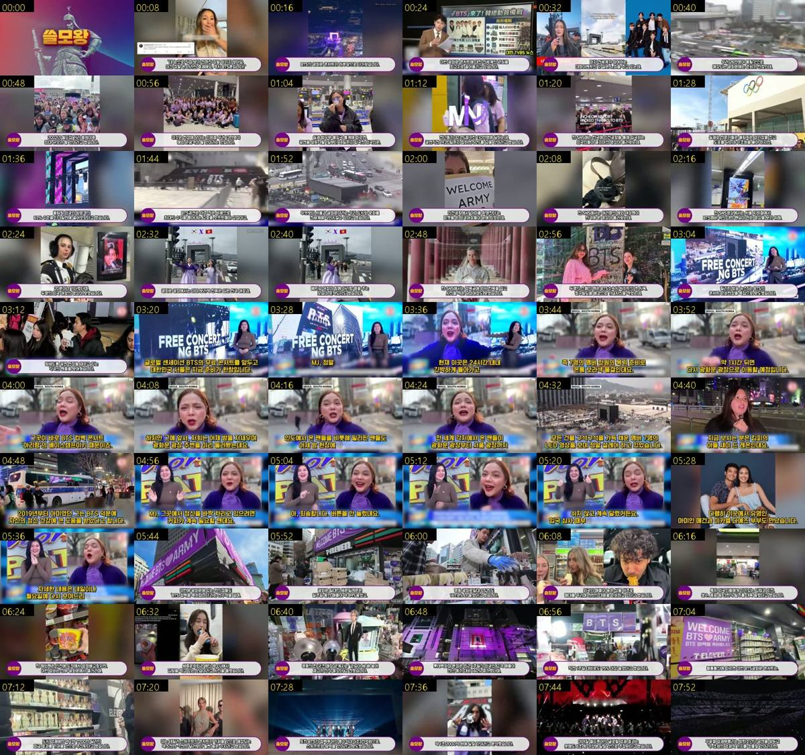

BTS 공연 때문에 한국에 처음온 외국인들 엄청난 광경..전세계 방송사들 난리난 이유 “지금 26만명이 문제가 아닙니다” 흥분
2026-03-20 · 9:12 · 조회 1,040,248 · 좋아요 21,469 · 댓글 889 · 자막: sub.ko-orig.json3
캡처 12장 (눌러서 그 시각부터 재생)
컷 타임라인 밝을수록 짧은 컷 · 마우스를 올리면 길이
화면 구성
전체 83컷, 평균 6.65초·중앙값 5.26초로 5편 중 가장 느림. 4~6초 24컷·6~10초 18컷이 중심, 10초 이상 12컷. 외국 팬 SNS 영상 4~7초씩, 사진 3~5초, 필리핀 방송은 03:14~05:37 약 2분 23초를 한 덩어리로 사용
대본 구성
한국어 내레이션(AI TTS 추정 — 직접 청취 불가, 자동자막상 균일한 낭독). 흰 라운드 자막바+보라 '쓸모왕' 배지. 단, 필리핀 방송 구간(03:14~05:37)은 자막바 없이 흰 글씨+검은 테두리(일부 노란 글씨) 자막으로 바뀌고 자동자막에 화자 전환 표시('>>')가 찍혀, 앵커·기자 목소리를 나눠 한국어로 더빙한 것으로 추정
훅 — 권위인용형(포브스 헤드라인) + 감정반응형(외국 팬 감격)
첫 6문장 (자동 자막, 오탈자 최소 보정)
- BTS가 돌아왔다.
- 그리고 음악 산업의 기록들을 갈아치울 것으로 예상된다.(-미국 포브스)
- 내 눈으로 직접 보기 전까진 정말 믿기지 않아요.
- 이건 정말 온 나라의 축제예요.
- 역시 BTS뿐입니다.
- BTS의 광화문 콘서트가 하루 앞으로 다가왔습니다.
로고 직후(00:02) BTS 7인 무대 화면 상단에 포브스 영문 헤드라인 'BTS Is Back—And Expected To Shatter These Music Industry Records'를 그대로 띄우고 '-미국 포브스' 출처 자막을 붙여 권위로 시작한다. 00:08~00:14에는 트윗 캡처와 함께 감격해 입을 막는 외국 여성 팬 영상에 '이건 정말 온 나라의 축제예요, 역시 BTS뿐입니다'를 얹어 감정을 끌어올린다. 00:15에 '광화문 콘서트 D-1' 사실을 던진 뒤 일본 NHK(00:18)·대만 TVBS(00:24) 보도 화면에 방송사 라벨을 붙이고 외국 리포터 세로영상 3분할(00:30)을 깔아 제목의 '전세계 방송사들 난리'를 30초 안에 눈으로 증명한다. 이어 26만 명·외국인 50% 같은 숫자로 규모감을 확정한다.
첫 40초 화면 (2초 간격 20장)
구성 흐름
- 00:00-00:14 훅 포브스 헤드라인 + 외국 팬 감격 반응
- 00:14-00:38 상황 제시 광화문 콘서트 D-1, 호주·멕시코·일본 등 각국 보도, 넷플릭스 190개국 생중계
- 00:38-01:54 숫자 근거 26만 명·외국인 50%(13만), 3월 입국 110만, '올림픽보다 BTS' 전문가 비교(67%)
- 01:54-03:12 외국 팬 릴레이 인천공항 'WELCOME ARMY', 지하철 광고 인증, 한복 아리랑 춤, 스페인 팬 12시간 비행
- 03:12-05:37 하이라이트 필리핀 방송 현장 연결 리포트를 통째로 한국어 더빙(앵커-기자 대화)
- 05:37-07:04 경제효과1 광화문 편의점 매출 89%·147.8%, 명동 굿즈샵 3배, 롯데백화점 외국인 매출 140%
- 07:04-07:58 경제효과2 블룸버그 1억7700만 달러(테일러 스위프트 대비), 회당 1조2천억, 월드투어 8조
- 07:58-08:26 결론 중동 전쟁 속 평화의 무료 콘서트, 네티즌 '전쟁보다 문화로 이기는 게 더 크다'
- 08:26-09:12 아웃트로 쓸모왕 로고송
끝까지 보게 하는 장치
- 숫자 연타: 26만 명(00:38)·외국인 13만(00:52)·입국 110만(01:07)·편의점 89%(05:53)·1억7700만 달러(07:06)·8조(07:43)
- 비교로 체감 키우기: 올림픽 외국인 방문객의 67%를 3일 만에(01:28), 테일러 스위프트 5천~7천만 달러 대비(07:12)
- 외국 팬 감정 릴레이(01:54~03:12) — 남미·베트남·스페인 등 국적을 바꿔가며 같은 감동 반복
- 실제 해외 생중계 롱블록(03:14~05:37)으로 '진짜 해외 방송이 다뤘다'는 현장감과 앵커-기자 대화의 재미
- 감동형 결론(07:58 전쟁 속 평화, 08:21 '문화로 이기는 게 더 크다')으로 마지막까지 보상
CTA 영상 본문에는 구독·좋아요 요청 멘트 없음(자막 기준). '이상 쓸모왕이었습니다'(08:26) 후 약 45초 로고송(08:26~09:12)으로 마무리. 설명란에 채널 멤버십 가입 링크, '좋아요·구독·알람 설정' 요청, 해시태그 #한국 #BTS #광화문
조회수가 높은 이유
- 광화문 공연(3/21) 하루 전(3/20) 업로드 — 검색·추천 수요가 가장 높은 순간을 잡음
- 제목 '전세계 방송사들 난리난 이유'를 실제 NHK·TVBS·필리핀 방송 화면으로 바로 증명
- 경제효과 숫자(편의점 매출, 1조2천억·8조, 테일러 스위프트 비교)로 자부심 자극
- 비꼼 없는 축제·감동 톤 → 좋아요 21,469개(조회수 대비 약 2.1%)로 5편 중 호감도 최고
- 외국 팬 개인 사연(스페인에서 12시간, BTS 덕에 정신 건강 회복) 같은 감정 요소
자기 의견 발췌
- [00:27] 마치 전 세계가 참여하는 대형 이벤트인 것 같은 느낌을 주고 있는데 넷플릭스로 전 세계 190여 국에 라이브로 방송된다는 것은 정말 놀라운 일이라고 했습니다.
- [02:39] 전 세계 아미들이 광화문에서 하나가 되는 광경이었습니다.
- [07:58] 지금 전 세계는 중동에서 벌어진 전쟁으로 위기감이 심화되고 있는데 연일 들려오는 뉴스는 암담한 상황입니다.
- [08:05] 이 가운데 한국에서 전 세계 평화를 외치는 BTS의 무료 콘서트 소식은 해외 팬들에게 조금이나마 위안을 주고 희망을 보게 해 줄 것이라고 했습니다.
- [08:21] (국내 네티즌 인용 형식의 결론) 전쟁으로 이기는 것보다 문화로 이기는 게 더 크구나.
편집 효과
하단 흰색 라운드 자막바+보라 '쓸모왕' 배지해외 기사 헤드라인 원문 상단 노출+'-미국 포브스' 출처 자막(00:02)방송사·국가 노란 라벨('일본 NHK 뉴스' 00:18, '대만 TVBS 뉴스' 00:24)트윗·SNS 글 캡처 오버레이(00:08, 06:32)세로영상 3분할 배치(00:30~00:38), 세로영상+좌우 블러 배경(00:48, 01:04, 06:16)해외 방송 통째 한국어 더빙+자막바 없는 별도 자막 스타일(03:14~05:37)연합뉴스 계약 사진 워터마크 그대로 사용(05:52)로고 인트로 2초 + 로고송 아웃트로원음 사용
원본 외국어 음성은 거의 들리지 않음(약 0~1% 추정). 한국어 자막 커버리지 99.8%. 필리핀 방송 2분 23초도 원음 대신 한국어 더빙으로 처리(화자 전환과 '버튼을 안 눌렀네요' 같은 대화까지 한국어로 재현, 05:02). 08:26 이후는 로고송
이 영상 따라 만들기
1) 한국에서 열리는 대형 이벤트의 D-1~당일을 노려 업로드 일정 확정 2) 소스 수집: 해외 기사 헤드라인 1~2개, 해외 방송 보도 3~5개(국가 다양하게), 외국인 SNS·브이로그 15~20개, 해외 현장 리포트 롱폼 1개(2분 이상), 연합뉴스 등 계약 사진 6~8장, 경제 통계 기사 3~4개 3) 대본: 해외 헤드라인+외국 팬 감격 멘트 훅 → D-day 사실 → 규모 숫자 3~4개 → 외국 팬 SNS 릴레이(국적별) → 해외 방송 현장 연결 한 덩어리 → 경제효과 숫자+유명 가수 비교 → 감동 한 문장 결론 4) 해외 방송 구간은 한국어 더빙+다른 자막 스타일로 구분 5) 방송사·국가 라벨을 화면 구석에 붙여 '전 세계가 보도'를 시각화 6) 컷은 5초 안팎으로 여유 있게, 로고 인트로·로고송 아웃트로
영상 전체 흐름 60장 보기
